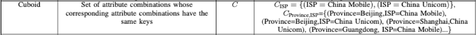

聚类结果分析
直接进行下钻和Squeeze的结合没能改进结果，所以考虑通过改良聚类结果。
因为偏差值阈值thre是影响聚类结果的重要因素，又由于现有候选根因数量不多，根据thre筛选掉正常值留下的异常叶子结点数量更少，可以直接观察不同thre时聚类的每个类簇里都有哪些候选根因集合。通过观察类簇中的叶子结点，来得出一些有益结论。
thre为0.9时
此时只剩一条叶子结点通过了阈值筛选，只有一个类簇。
thre为0.5时
此时总共5条叶子结点通过了阈值筛选，分为两个类簇，两个类簇的可能根因集合分别是（广东，电信，华为）和（广东，电信）。因为我们希望得到广东电信其他第三方的异常情况，所以在改进聚类时，要做到能把这两个类簇里的叶子结点全部作为根因集合输出。
thre为0.2时
此时有三个类簇，第一个类簇的可能根因是（广东，电信，华为），第二个类簇的可能根因是（广东，电信），第三个类簇的叶子结点不够统一，可能根因会是其中分数最高且超过GPS分数的叶子结点。
thre为0.1时
此时有三个类簇，前两个还是和上面一致，第三个类簇增加了很多叶子结点。
thre为0.01时
此时三个类簇，前两个和上面一致，第三个类簇再次多了一些叶子结点。
聚类输出结果调整
Squeeze论文中对于根因有一个推测：导致了相同异常幅度（即聚类时分到了一个类簇中）的根因的属性组合在一个cuboid里。在现实情况里，导致相同异常幅度的根因属性组合来自不止一个cuboid的情况是较罕见的。

Cuboid是有着相同元素值的属性组合的集合，比如（电信）的cuboid，就是ISP为电信时的所有子集合。
在10月9日的数据中，第二个类簇的情况就是他们都属于（广东，电信）这一cuboid。想要改变聚类的规则，出现全部分数较高的根因候选，首先想到的是聚类将结果计算并排序后不只进行最高分数与阈值theta的比较，而是希望用前几个根因组合的得分与阈值theta比较，输出其中符合条件的，而不是最多一个类簇只输出一个。
对10月9日数据进行分析，通过聚类，有3个类簇，每个类簇中分析得到的根因组合和对应分数、所在层数。
根据算法取得每个类簇中得分最高的一个根因组合作为可能根因，总共3个。
现在在三个类簇的结果里，都出现了layer为3，也就是第三层的计算结果。这说明之所以没出现（广东，电信）其他第三方的结果，是因为在第三层的计算时，其他第三方的结果没有出现比之前已有根因更大的分数，在分数判断比较时，被筛选掉了。所以考虑在自顶向下的判断时，改变筛选判断的条件，以得到其他影响力较弱的根因集合。